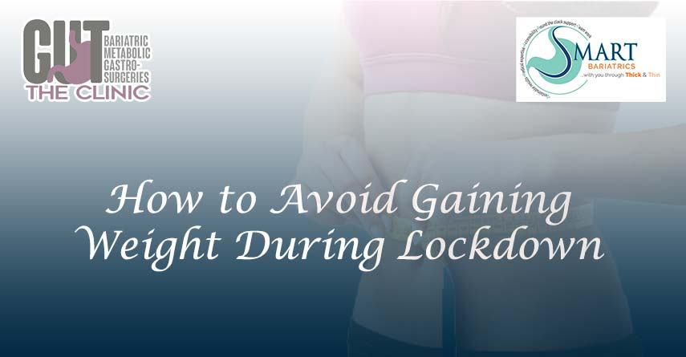

How to Increase Metabolism to Lose Weight: Effective Strategies
Before asking how to increase metabolism to lose weight, you should know what metabolism is. Losing weight and burning calories becomes easier when you understand how metabolism works.
Metabolism is like your body’s engine, turning food into energy and burning calories. But wait. It’s not just that.
Metabolism also affects your blood flow, crucial bodily functions (body temperature, waste elimination, brain functioning), and overall vitality.
Here is a personalized guide for you that will teach you the answer to how to increase metabolism to lose weight – nothing complicated, just pure science giving terrific results.
Understanding Metabolism
Metabolism encompasses all the functions within your body that help keep your body alive, such as breathing and digestion of food. Guess what, these processes are fuelled when the digestive system breaks down foods into sugars and acid and the body utilizes them.
A higher metabolism means that your body burns calories faster, which means you will naturally maintain a healthy weight. Age, genetics, medical conditions as well as the level of activity that you participate in daily impact your metabolism. Although it's impossible to be in control of all the variables but there are many ways to increase metabolism for losing weight in a heathy manner.
Foods That Act as Natural Metabolism Boosters
Food is fuel for your body. So, being mindful of whatever you eat can help you with your question of “how to increase metabolism?”. Don’t just go on eating whatever you grab. Incorporating certain foods into your diet can make a significant difference in how your body burns calories. Here are some foods that are metabolism boosters:
- Protein-rich foods: Foods like chicken, fish, eggs, and beans need more energy to digest, which can temporarily increase metabolism to lose weight.
- Spicy foods: Chili peppers contain something called capsaicin, which can help your body burn calories. Indian spices like pepper, ginger, and cinnamon can be incorporated into your food for a metabolic boost.
- Green tea and coffee: These drinks are packed with specific ingredients such as catechins that help with metabolism.
- Whole grains and fiber-rich foods: Foods like oats, brown rice, legumes, nuts and seeds take longer to digest and keep you full for a longer time which can help burn more calories.
- Water: Staying hydrated keeps your metabolism running smoothly. Even mild dehydration can slow it down.
Lifestyle changes to increase metabolism and burn calories
Have you ever wondered how your daily routine and lifestyle might be affecting your metabolism and calories? Just some simple tweaks here and there and your metabolism will be soaring. Here are some tips on boosting metabolism and how to burn calories in an effective manner:
- Get enough sleep: When you don’t sleep well, it slows down your metabolism and makes you feel hungrier. So, aim for a minimum of 7 hours of sleep time.
- Eat smaller, more frequent meals: Eating healthy food every 3-4 hours in small portions keeps your metabolism active all day.
- Stay active and move your body: Simple things like walking more or taking the stairs can help.
- Manage stress: Too much stress can mess up your hormones, particularly cortisol, and slow down your metabolism.
- No sugar, only water: Consuming sugar in the form of drinks and snacks will negatively impact metabolism and lead to weight gain.
Exercises to Enhance Metabolism and Shed Pounds
Insufficient physical activity and your sedentary lifestyle can ruin the progress that you make with diet changes. That is why incorporating exercise is necessary to speed up your metabolism. Here are some exercise types to try:
- Strength training: More muscle means more calories that you will be burning. So, building muscle helps you even when you’re resting.
- High-Intensity Interval Training (HIIT): Short bursts of hard exercise followed by rest can boost your metabolism for hours. Exercises that include cardio like running, cycling, or swimming can help burn calories and increase your metabolism. For example, sprint for 1 minute followed by a walk of 2 minutes. Repeat this cycle for a 30-minute routine.
- Functional exercises: Movements like lunges, squats, and burpees engage several muscles at the same time and help you burn more calories.
Try to incorporate a mixture of these workouts into your daily routine. Mixing these activities without stopping for as little as 15 minutes will push your heart rate and boost your metabolic rate.
Fast Metabolism: Facts You Should Know
Having a "fast metabolism" means your body burns calories quickly, even when you’re resting. You might have wondered why for some people it is easy to maintain their weight effortlessly. This is because people with a naturally fast metabolism often find it easier to stay at a healthy weight.
Your metabolic rate is influenced by other factors as well like your age and genetics and your hormone levels. But you can know how your metabolism is working by keeping track of the lifestyle that you are maintaining.
Common Metabolism Myths Debunked
Surprisingly, there are some things people say about metabolism that are not true. Some of these myths sound too good to be true. Let’s clear up a few myths:
Myth 1: Skipping meals speeds up your metabolism.
Truth: Skipping meals can slow it down and make you eat a lot more later.
Myth 2: Your metabolism slows down a lot as you age.
Truth: Staying active and eating well will help keep your metabolism strong.
Myth 3: Eating late at night makes you gain weight.
Truth: It’s more about how many calories you eat in total, not when you eat them.
Myth 4: Intense training and exercise will boost metabolism
Truth: While strength training and cardio activities help with your metabolism, doing a lot of it will tire you and cause you pain.
Knowing the truth about these myths can help you make better choices. Metabolism is not so complex to deal with. There are no quick fixes, just some changes that you will have to make in your lifestyle and diet.
How Weight Loss Surgery Cost Relates to Metabolic Health
Certain health conditions like severe obesity with BMI ? 40 kg/m², obesity-related comorbidities (diabetes and osteoarthritis), and commitment to lifestyle changes disallow people to lose weight. For them, weight loss surgery can be a way to improve their health. These surgeries can change the way the body handles food, making it easier to burn calories.
Weight loss surgery cost in Delhi may cost you anywhere from 2,50,000 Rs to 5,00,000 Rs. The cost is influenced by several factors like the surgeon and the hospital of your choice and the post-operative care that is provided. Talking to your doctor is important to see if weight loss surgery is the right choice for you.
Conclusion: Achieving Your Weight Loss Goals
Boosting your metabolism is all about eating right, staying active, and making smart lifestyle choices. By following these tips on how to increase metabolism to lose weight, you’ll be on your way to reaching your health goals. You should remember, that even small changes can make a big difference. So, start today and enjoy the journey to a healthier you!